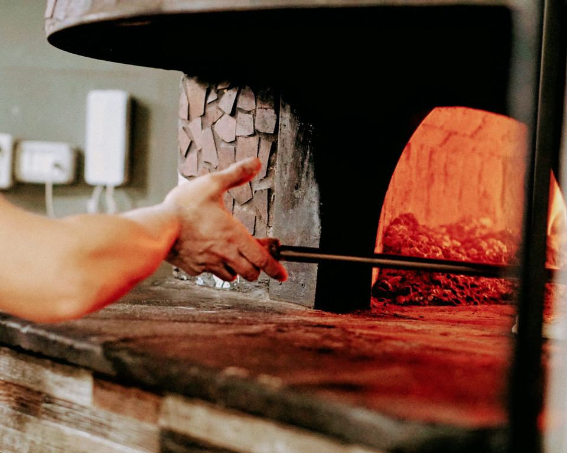

Pizzeria napoletana e cucina campana · Frosinone
Pizza napoletana e cucina campana a Frosinone, sulla Tiburtina
Cosa ti va stasera? tocca e scegli
Pizza dal forno a legna: da dove cominciare
- MargheritaPomodoro San Marzano, fior di latte di Agerola, parmigiano e basilico
- Regina MargheritaPomodorini freschi datterino, poco sugo, fior di latte di Agerola, basilico
- BufalinaMozzarella di bufala, pomodorini pachino e poco sugo
- Sorrisi e BocconciniCornicione ripieno di ricotta, pomodorini, bufala DOP
- Ragù e PolpetteProvola di Agerola, ragù e polpette
- B&BMortadella, pesto di pistacchio di Bronte, trito di pistacchi
C’è anche la pizza a ruoto: ’O sole mio, Passione, Luna Rossa…
Fritti napoletani: da dove cominciare
- SpaccanapoliPizzetta fritta con pomodoro, parmigiano e basilico
- Spaccanapoli 2.0Pizzetta fritta con pistacchio, burrata e mortadella
- Frittatina ClassicaBucatini, carne macinata, besciamella, salsiccia, piselli
- Frittatina Pistacchio, Mortadella e Burrata
- Crocchettone Cacio & PepePatate lesse, grana padano, pecorino romano, pepe, bacon (180 g)
- AngiolettiBastoncini di pasta di pizza fritta con datterino
Polpette e parmigiana: da dove cominciare
- Polpettine al RagùPolpette di manzo con ragù
- Polpettine & PistacchioPolpettine di manzo con crema di parmigiano e pesto di pistacchio
- Polpette cacio, pepe e bacon croccante
- Polpette alla Genovese Napoletana
- Parmigiana di Melanzane
- Cannolo ripieno di parmigianaCannolo siciliano ripieno di parmigiana di melanzane, mousse di mozzarella di bufala, scaglie di parmigiano
Primi e mare: da dove cominciare
- Paccheri alla pescatoraCon seppia, gamberoni, pomodorini datterino, cozze, vongole e prezzemolo
- Linguina PuteolanaLinguine con vongole veraci, pomodoro datterino e prezzemolo
- Scialatielli di mareScialatielli veraci, vongole, cannolicchi, cozze, macchiato al pomodorino e prezzemolo
- Ziti alla Genovese NapoletanaCon ziti, cipolla, battuto di carote sedano e odori, carne di manzo a pezzi e pecorino
- Zuppa di cozze alla napoletanaCozze, vongole, cannolicchi, polpo, gamberone, leggermente macchiato, olio piccante, fresella e tarallo con pepe
- Baccalà alla NapoletanaCon baccalà, pomodoro, olive nere, capperi
Brace e carne: da dove cominciare
- Tagliata Argentina all’aceto balsamicoCon carne di Angus argentino, scaglie di grana e rucola (250 g)
- Fiocco di VitelloCotto a bassa temperatura, glassato all’Aglianico su soffice di patate
- Mini Hamburger di Chianina8 miniburger di chianina alla brace serviti con 3 salsine
- Bistecca di vitellino alla brace300 g
- Misto di Carne alla GrigliaVerdure grigliate, salsiccia, patate al forno, manzetta texana, mini hamburger di chianina, reale di manzo americano
Panini: da dove cominciare
- ChianinoCon lardo di Colonnata, formaggio di fossa, hamburger chianino, fior di latte di Agerola, cipolla caramellata
- Parmigiana & PolpetteCon fiordilatte, polpette al ragù, parmigiana di melanzane
- MagnificoHamburger di chianina 200 g, formaggio roquefort, cipolla di Tropea e crema di parmigiano
- Pepe NeroCon misticanza, pomodoro ramato, cotoletta di petto di pollo e patatine
- Triple BurgerTre hamburger, patatine fritte, bacon, cheddar, maionese affumicata piccante, provola di Agerola
Pane brioche o pane pizza, scegli tu.

Il mestiere
Il forno a legna è a vista
La napoletana nasce qui: impasto lievitato, cornicione alto, cottura a legna davanti a voi. Chi la preferisce più bassa e croccante la trova cotta nel forno elettrico. Al tavolo arrivano anche fritti, polpette e tutta la cucina campana, a pranzo e a cena, ogni giorno.
Guarda la guida al menuDalle recensioni Google
Chi c’è stato lo racconta
Una vera pizzeria Napoletana "verace", pizza per i massimi, consigliatissimi gli antipasti tipici e tutta la cucina napoletana
agosto 2026 · su Google
Menù molto ricco orientato alla cucina campana: pizza fritta, parmigiana di melanzane, polpette in tutte le combinazioni possibili
luglio 2026 · su Google
Una autentica certezza a Frosinone e non solo.
ottobre 2025 · su Google
Divina la Spaccanapoli 2.0 con burrata mortadella e pistacchi! (Provatela)
2024 · su Google
Locale pulito e accogliente. Servizio veloce e cibo ottimo. La pizza fritta è una delizia.
ottobre 2025 · su Google
Quando non sai dove andare o nella coppia o comitiva ci sono gusti differenti, l'unica alternativa è scegliere Pepe Nero.
2024 · su Google
Il sabato sera la sala si riempie presto.
Scriveteci su WhatsApp: vi teniamo il tavolo.